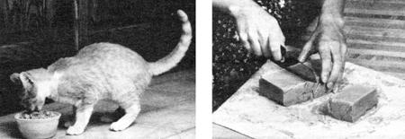

Here's one way that you can have your cake . . . and let your cat eat, too!
It's easy enough, I suppose, to see a connection between hungry cats and the meat department of your local supermarket . . . but how about comprehending the idea of making soap from cat food?
Well, my wife Lenore and I found that these things can be interrelated . . . after we watched our butcher's assistant clean up at the family market one evening. We noted that the electric meat saw regularly dropped "meat dust" on the floor. A mixture of beef, lamb, pork, poultry, and fish, it was rather too fatty and finely ground to be used for human consumption, and was usually swept up and thrown away. When Lenore and I showed interest, we were invited to take as much as we wanted.
RENDERING THE WORKS
A bit later, my wife came home with four or five pounds of meat waste that our obliging butcher's assistant had scooped into a big plastic bag. Lenore tossed the stuff into cake pans that she placed in a 350 °F oven. Fifteen minutes later, she poured off several tablespoonfuls of fat that had liquefied around a number of meaty nuggets. After another quarter hour, the lumps were brown and enticing. When they'd cooled, they were gobbled up by our two cats. And since then, the "salvaged Salisbury steak" has been a regular treat on their menu.
Rendered meat waste produces a lot of grease, though, and we were soon running out of jars to store it in. We weren't sure how to handle the problem . . . until one morning I discovered a possible solution on the side of a can of lye with which I was declogging the sink. It was a recipe for soap, calling for 1 pound of lye and 6 pounds of you guessed it-clean fat. Now 7 pounds of soap sounded a bit too slippery for Lenore and me, but we were able to improvise a simple two- or three-bar recipe that has proved perfectly adequate for our needs.
We start with 4 heaping tablespoons of powdered lye, 2 cups of melted fat, and 1 cup of strongly brewed spice tea. To make the tea, we pour a cup of boiling water over a heaping teaspoon each of ground cloves and ground cinnamon, let the liquid stand until tepid, strain it, and then put it into a glass quart bottle with a metal screw cap.
We start out with a good deal of extra fat, as its volume may be much reduced by heating. Since the melted fat sometimes contains small meat particles, we pour it through four or five layers of cloth-preferably nylon-laid in the bottom of a colander. (Underclothing from which the elastic has retired, but which is clean and otherwise intact, works very well.)
While the fat is cooling, the lye is poured - slowly-into the tea, which as a result is warmed to well above 100 °F when the solution is thoroughly mixed. [EDITOR'S NOTE: The chemical reaction between water and lye produces not only heat, but also caustic fumes . . . so be sure to avert your face when mixing these two elements.] We use only glass or (unchipped) enamel containers and a wooden spoon for this operation. Never use aluminum or tin utensils, as they'll react with the lye solution.
When our candy thermometer tells us that both ingredients-the tea-lye solution and the melted fat-have dropped below 100°F (both should be as near the same temperature as possible), the fat is poured into a large mixing bowl. Then, while one of us stirs, the other pours the tea-lye solution into the bowl in a thin stream through one of two sixpenny nail holes punched into the top of the bottle cap.
After 30 minutes or more of stirring, when things have commingled, the surface of the brew will support a drop of liquid for a moment. At this point, we add a teaspoon of food extract . . . usually orange or lemon, although many others, such as mint, rum, or vanilla, are also nice. We then give the batch a final, thorough stirring, and pour the young. soap into cardboard molds lined with recycled plastic bags. These are covered with towels and placed on top of our jacketed water heater in the bathroom for 24 hours. When that time has passed, we remove the bars from their molds and store them in paper bags on a closet shelf to "cure" for a month.
We feel pretty good about our salvage project. Just for the asking, we've found a nearly free (after all, it does take energy to run the stove) source of proteinaceous kitty chow and low-cost washing suds. At the same time we're able-at almost every step of the operation-to make something useful out of a resource that would otherwise go to waste. That's a good return on floor sweepings, wouldn't you say?
EDITOR'S NOTE: MOTHER's test kitchens found the finished product described here rather too harsh-at least, in its uncured state-for hand or body use, but perfectly suitable for laundry or household cleaning. Those readers who wish to learn more about soap making will find Ann Bramson's Soap: Making It, Enjoying It both informative and entertaining. The book is available for $4.95 plus $1.00 for postage and handling from Workman Publishing Company, Dept. TMEN, 1 West 39th Street, New York, New York 10018.
CAUTION: LYE AT WORK!
Lye is a powerful (alkaline) chemical, and it should be used with great care. When preparing lye solutions, always remember to take the following precautions:
[1] Work in a well-ventilated area, and never breathe any fumes rising from the mixture.
[2] Use rubber gloves, and pad your working surfaces with newspaper to prevent damage in the event of an unexpected spill.
[3]Mix lye water in a container that's big enough to prevent spillovers.
[4] Use containers made of glass, enamel, stainless steel, or hard plastic, and use stirrers made of wood (which will be eaten away eventually) or plastic.
[5] Use plastic funnels when you're pouring the mixture into small necked containers.
|
 STAFF PHOTOS TOP: Eyes closed in blissful appreciation, ""Socks"" munches his ""salvaged Salisbury steak"" treat. BOTTOM: MOTHER's Food Coordinator, Beth Stickel, cuts a test slab of homemade soap into three standard-sized bars. |
|
|